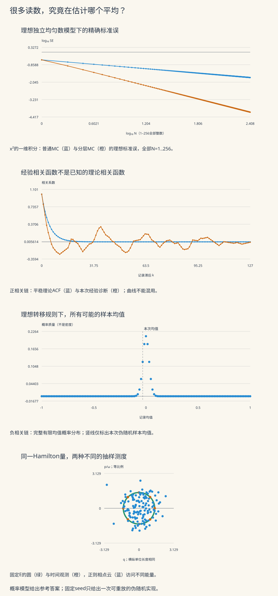

本页目录
计算物理 · 蒙特卡洛与分子动力学
本页问题：程序给出一千个读数，这一千个数究竟在估计什么？随机数、运动轨迹和误差条之间，各需要哪一步论证？
从三个能算出参考答案的小模型出发：积分、两态磁矩、谐振子。先把目标测度、初始化、相关性和观测时刻分清，再走向格点蒙特卡洛与实际辛积分。前置：统计系综、概率期望与方差、Hamilton方程。
学习层：读数多，并不自动意味着知道得多
一条不动的曲线，可能比一条波动的曲线更不可靠
若一段磁化记录始终为1，样本方差确实为0。但如果目标平均是0，程序只是一直停在错误的一边。另一个程序不断在正负之间交替，某些平均反而比独立抽样更准确。不能只凭曲线是否平滑判断模拟质量。
| 实验 | 能亲手改变的量 | 要区分的两件事 |
|---|---|---|
| 随机积分 | 样本数与种子 | 一次误差与估计量的方差 |
| 两态Metropolis | 场、提议概率、初值、热化和记录间隔 | 平稳分布与路径独立性 |
| 谐振子系综 | 能量、温度参数和观测时刻 | 精确运动与正确的平均测度 |
先回答四个预测，再揭示完整计算。所有实验使用无量纲变量；谐振子的质量尺度取1，不能把有单位动量随意当成速度。
无JavaScript也能核对。 默认两态模型取零场、提出翻转概率0.1、从目标分布抽初值，记录128次，不热化、不跳步。其单步相关系数是0.8。下面同时列出理想模型的精确有限方差与固定seed的一次实现；它们回答不同问题。
| 量 | 默认模型的数值 |
|---|---|
| 单步相关系数λ | 0.8 |
| 有限均值期望 | 0 |
| 有限均值方差 | 0.06787109375 |
| 有限均值标准误 | 0.260520812508 |
| IID参考标准误 | 0.0883883476483 |
| 渐近相关时间τ | 4.5 |
| 渐近有效样本数 | 14.2222222222 |
| 本次记录均值 | 0.171875 |
| 本次样本方差 | 0.978100393701 |
| 忽略相关性的样本SE诊断 | 0.0874151550121 |
| 实际提出翻转次数 | 13 |
| 实际接受翻转次数 | 13 |
接受率为1仍可有明显正相关：这里只有十分之一的步提出翻转。给已提出的翻转高接受率，并没有让整条轨迹变成独立样本。

图中的标准误来自明确的理想概率模型；种子只决定可重放的一次伪随机路径。固定能量的圆与正则相点云使用相同坐标比例。完整数值、转移和区间概率都能在实验账本中核对。
1. 算法之前，先写出目标平均
蒙特卡洛是用随机样本估计期望或积分的一类方法。分子动力学则从初始条件出发积分运动方程。前者未必产生物理时间，后者未必自动采样我们想要的统计系综。
例如，正则平均写作
一条确定初值的孤立Hamilton轨迹，则给出
只有在目标测度与动力学的不变测度相匹配、并有适当遍历条件时，才有理由把长期时间平均当作相应系综平均。小系统不同系综通常不同；“都在算平均”不能省掉这个条件。经典配分函数的起点可参看 Tong §2.1。
一次计算至少分四层误差：物理模型误差、有限系统/区域误差、数值离散误差、统计抽样误差。缩小步长不能消除错误的势能模型；增加样本也不能修复错误的边界条件。
2. 随机积分：从一次取点推到误差条
先算最简单的例子
理想模型中独立抽取 \(U_i\sim\mathrm{Unif}(0,1)\)，取
由于 \(E[U^2]=1/3\)、\(E[U^4]=1/5\)，
最后一步真正用了独立性，使不同项的协方差为0。标准误是估计量标准差 \(\mathrm{SE}=\sqrt{4/(45N)}\)，而本次有符号误差是 \(\widehat I_N-1/3\)。一个是重复理想试验的散布尺度，一个是这次跑出来的偏离，不必相等。
常说的 \(N^{-1/2}\) 是有限方差独立抽样下的标准误阶数；它不保证每次加倍样本误差都下降，也不保证任何高维积分都容易。维数仍会通过被积函数的方差、取样成本和稀有事件影响计算量。
已知真实方差时，Chebyshev不等式给任意 \(0\lt\alpha\lt1\)：
常见的约 \(1.96\,\mathrm{SE}\) 区间则依赖正态近似；不要把它对任意小样本都称为精确95%区间。
3. 分层为什么在这个例子中更有效
把 \([0,1]\) 等分为 \(N\) 层，每层抽一个点：
每层权重为 \(1/N\)。展开多项式就能逐层算出
独立层之间没有协方差，因此
本例标准误是 \(O(N^{-3/2})\)。改善来自光滑一维函数在每个小区间内变化很小，不是所有“随机方法”都有这个阶数。一般分层的条件、权重和方差分解见 Owen §8.4。
实验对两种方法复用同一组 \(U_j\)，便于配对比较；两种估计之间因而相关。各自方差公式仍成立，但若要计算“两估计之差”的方差，必须另计它们的协方差。
还有两个容易漏掉的细节：
- 完成前 \(k\) 层时，部分和估计的是 \(\int_0^{k/N}x^2dx=(k/N)^3/3\)，不是全积分。实验按这个目标画图。
- 每层只有一个读数，不能仅靠该层样本估出层内方差。这里能报精确方差，是因为多项式模型可解析求矩；未知函数要另设计重复取样或误差评估。
4. 两态Metropolis：把详细平衡完整算一遍
令单个磁矩 \(s\in\{+1,-1\}\)，能量为 \(E(s)=-bs\)。以无量纲场 \(\eta=\beta b\) 表示，
每一步以概率 \(r\) 提出翻转，提议前后对称。翻转的无量纲能量差是 \(\beta\Delta E=2\eta s\)，接受率取
定义真正的两方向转移概率
这里用 \(b_-\) 表示负态到正态的概率，与有单位的场 \(b\) 区分。按状态序 \((+1,-1)\)，
因为 \(\pi_+/\pi_-=e^{2\eta}\)，无论 \(\eta\) 正负，都有 \(\pi_+a=\pi_-b_-\)。把这条平衡流与两个自环相加，就得到 \(\pi P=\pi\)。这证明目标分布平稳，没有证明相邻状态独立。
对有限 \(\eta\)，\(r\gt0\) 时两方向都有正转移概率，链不可约；除 \(\eta=0,r=1\) 的纯交替情形外还有自环，因而非周期。\(r=0\) 时每个状态都不动，目标分布仍平稳，却不再是唯一平稳分布。
在零场下，\(a=b_-=r\)。取 \(r=0.1\) 时所有已提出的翻转都接受，但只有十分之一步会提出翻转。接受率100%与独立采样完全是两件事。
5. 自相关怎样进入均值方差
\(P\) 除了特征值1，另一个特征值是
直接用两行条件期望验证
若从 \(\pi\) 初始化，就有 \(\operatorname{Cov}(s_t,s_{t+k})=v\lambda^k\)。每隔 \(d\) 个真实转移记录一次时，记 \(R=\lambda^d\)，记录相关函数为 \(\rho(k)=R^k\)。
对 \(N\) 个平稳记录逐项展开平方：
这条有限式在 \(R=\pm1\) 也成立。若 \(\lvert R\rvert\lt1\)、且样本足够长才可近似为
所以正相关时标准误是IID值的约 \(\sqrt{2\tau_{\mathrm{int}}}\) 倍，要变宽，不能把误差条除以相关时间。本页定义的 \(\tau\) 含 \(1/2\)；有的资料把整个倍率 \(2\tau\) 称作相关时间，比较时先看公式。
在这个平稳混合模型中，
\(R\lt0\) 时它可以大于 \(N\)，意思是这个观测量的均值方差小于同样数量IID读数的方差，不是凭空产生更多独立物理构型。Stan的ESS说明也明确区分正相关与反相关。实验不把ESS强行截到 \(N\)，也不把这一渐近量当成短链的精确方差。
6. 初始化偏差不能藏进标准误
固定初值 \(s_0\) 时，
实验先实际执行 \(B\) 步，再每 \(d\) 步记录一次，故 \(t_j=B+jd,\ j=1,\ldots,N\)。有限均值的期望与偏差是
对 \(u\ge t\)，由同一个条件期望式得到
这样可以按真实初始化求有限方差，而不偷用平稳公式。评价对目标 \(m\) 的误差时，完整恒等式是
例如 \(r=0\)、固定初值 \(+1\)，所有样本都是1。均值的随机方差为0，但偏差为 \(1-\tanh\eta\)。这时“误差条为零”只说明程序每次都同样错。若从目标分布随机抽初值后冻结，则单次路径仍不动，但不同理想试验会冻在不同状态；均值方差不随 \(N\) 减小。
为了稳定计算近交替情况下的有限方差，实验还用非负项求和。令记录为 \(Y_j\)，\(V_j=\operatorname{Var}(Y_j)\)，
\(j\ge2\) 的创新 \(\varepsilon_j\) 与过去不相关，且方差 \(W_j=E[\operatorname{Var}(Y_j\mid Y_{j-1})]\ge0\)。反复代入条件期望，得到
每一项都在账本中显示。它与协方差双重求和是同一个量；没有用正数截断掩盖负方差。另一个独立视角是按“末状态、已出现的正态次数”传播概率，得到全部 \(N+1\) 种可能均值的分布。图中的分布来自这项完整递推，绝非用同一seed伪装多次试验。
7. 周期、冻结与隔步记录的反例
零场且 \(r=1\) 时，\(s_t\) 必定正负交替，\(\lambda=-1\)。
从目标分布初始化、不跳步时，偶数 \(N\) 的样本均值恰为0；奇数 \(N\) 的均值为 \(\pm1/N\)。它们的有限方差分别是0与 \(1/N^2\)。然而链的边缘分布从一个固定状态出发不会收敛，相关级数也不绝对收敛；不能给它套上前节的混合渐近公式。
如果改成 \(d=2\)，记录的却始终是同一个状态：\(R=(-1)^2=1\)。平稳初始化下，记录均值的方差变回1。丢掉一半记录甚至会丢掉原本有利的负相关。
对一般模型，讨论thinning时还要固定预算：同样记录 \(N\) 点，间隔更大通常执行了更多真实转移；这不是免费增益。实验同时显示 \(B+Nd\)，不会隐藏那些被跳过的计算。
经验ACF也不等于理论ACF。本页采用
分母为0时未定义，显示“—”。对非恒定样本，若把这一中心化估计的全部滞后直接相加，反而有
因此不能无脑把整条经验相关曲线塞进无限相关和。实际误差估计需要合理窗口、分块或多链等方法；Geyer的自协方差讲义讨论了长滞后估计噪声。这里展示完整经验ACF用于诊断，标准误参考则来自可解模型，不冒充通用MCMC误差估计器。
8. 分子动力学：方程正确以后，还要问平均是什么
给定势能 \(V(q_1,\ldots,q_n)\)，经典动力学求解
例如Lennard–Jones对势
径向力的符号、粒子对是否重复计数、截断处是否连续，都需要按实际模型检查。一个平滑的能量图不能证明这些都正确。
实际积分还要研究步长、相位、稳定性和长期结构。Verlet等辛方法对许多Hamilton长期问题很有价值，但不能无条件说“保结构总比高阶重要”。高精度短时间轨迹、刚性、约束或非Hamilton耗散问题，比较标准会不同。下一讲实际比较Verlet、Euler、RK4和中点法，并展示辛却失稳的反例。
本页为了单独观察“平均测度”，对谐振子使用解析流。这样即使积分截断误差为零，仍能看见系综选择和观测混叠造成的差别。
9. 一个谐振子，两个不同的概率分布
取无量纲Hamilton量
固定 \(E\gt0\) 的连续轨道为
沿完整一周期的平均等于均匀相角平均。用 \(\langle\cos^2\theta\rangle=1/2\)、 \(\langle\cos^4\theta\rangle=3/8\)，
\(E=0\) 则是原点的点质量，不能套含 \(1/\sqrt E\) 的位置密度。
正则相空间密度却是
它是两个独立Gaussian因子的乘积，因而
取 \(E=1/\beta\)，二阶矩恰相同，微正则四阶矩却只有正则值的一半。孤立单振子的能量不波动，正则能量还满足 \(\operatorname{Var}_\beta(H)=1/\beta^2\)。这就是“比较同一平均对象”不能省略的可计算反例。
10. 正则相点怎样真正抽出来
把相空间改用能量与相角，
所以正则概率元为
能量服从指数分布，相角独立均匀。因此抽两个理想均匀数 \(U,V\)，令 \(E=-\log U/\beta\)、\(\theta=2\pi V\)，再代入上式，就得到正则相点。实验逐一记录这两个数和生成的能量、坐标；蓝色云中的不同点通常位于不同能量圆。
固定能量下的位置分布是转折点附近较高的反正弦分布。令 \(A=\sqrt{2E}/\omega\)，对 \(-A\le x\le A\)，
端点密度发散但可积；这对应粒子在转折点速度变小、停留更久。实验画每一箱的精确概率 \(F_E(x_{\mathrm R})-F_E(x_{\mathrm L})\)，不用人为截顶密度。零能量另作为原点质量处理。
11. 精确的运动，也会被不当观测时刻误读
令观测间隔为周期的 \(c\) 倍，实验的时刻是
当 \(c=1\)，每次恰好看到同一个相点；当 \(c=1/2\)，只看到相对的两个点。增加 \(N\) 并不会自动恢复连续相角平均。这是观测混叠，不能归咎于这里并不存在的积分截断误差。
默认 \(c=1/8\)、\(N=128\)，每8点走完一组等相角位置。二阶和四阶矩在这组节点上恰好积分正确，但16箱的位置频率仍可能与连续区间概率不同；少数矩相同仍不等于整个分布相同。
真实MD要先选目标：孤立动力学关注能量面上的测度；要采样正则系综，常需适当热浴或另一种保持目标分布的采样机制。加入一个“恒温”按钮并不自动证明不变分布与遍历性，必须检查具体动力学。可复现的物理研究还需多初值、运行时长、步长和系统尺寸敏感性。
12. 迁移练习与完整答案
练习一： 用普通MC和每层一个样本的分层MC计算本页积分。推导分层的方差，并解释为何不能要求每个seed的分层误差都更小。
展开：先在每层求矩，再对独立项求和
对 \(U\sim\mathrm{Unif}(0,1)\)， \(E[(j+U)^2]=j^2+j+1/3\)， \(E[(j+U)^4]=j^4+2j^3+2j^2+j+1/5\)。两者相减得 \(\operatorname{Var}((j+U)^2)=j^2/3+j/3+4/45\)。除以 \(N^4\)，再乘估计量权重平方 \(1/N^2\) 并对 \(j=0,\ldots,N-1\) 求和，得到 \((5N^2-1)/(45N^5)\)。
普通MC方差为 \(4/(45N)\)，方差比为 \(4N^4/(5N^2-1)\)。\(N=1\) 两者相同，\(N\gt1\) 分层方差更小。但方差比较是理想重复试验的平方误差平均比较，绝不表示每一对实现都按同样次序排列。
练习二： 零场取 \(r=0.9\)。求 \(\lambda\)、渐近ESS；再取 \(r=1\)，分别说明 \(d=1\) 与 \(d=2\)，以及偶数和奇数 \(N\) 的有限方差。
展开：负相关可以有利，但周期边界必须另算
零场 \(a=b_-=r\)，故 \(r=0.9\) 时 \(\lambda=-0.8\)。不跳步有 \(2\tau=(1-0.8)/(1+0.8)=1/9\)， \(N_{\mathrm{eff}}\approx9N\)。这是平稳长链的渐近结果。
\(r=1,d=1\) 时每两个读数和为0。平稳初始化下，偶数 \(N\) 均值恒0，方差0；奇数 \(N\) 均值以相等概率为 \(\pm1/N\)，方差 \(1/N^2\)。此时不使用相关无穷和或混合CLT。
\(d=2\) 时全记录相同，平稳初始化给均值 \(\pm1\) 各半，方差1；若固定初值，随机方差0，但对目标0有偏差 \(\pm1\)、MSE为1。初始化必须跟着答案一起说明。
练习三： 固定从 \(s_0=-1\) 开始，保留任意 \(B,d,N\)。写出均值偏差，并说明“SE很小”为什么仍不够。
展开：先把每个观测时刻写出来
每个时刻为 \(t_j=B+jd\)，所以
当 \(R=\lambda^d\ne1\)，也可写成 \((-1-m)\lambda^{B+d}(1-R^N)/(N(1-R))\)；\(R=1\) 时直接用有限和，不能除以0。实验为避免近边界抵消，保留稳定有限计算。
均值的MSE等于有限方差加该偏差平方。标准误只衡量围绕 \(E[\bar s]\) 的波动。若 \(r=0\)，均值始终为−1，SE为0而偏差为 \(-1-m\)。反之，已知真实偏差时，可用 \(|\mathrm{bias}|+\mathrm{SE}/\sqrt\alpha\) 作为Chebyshev保证下对目标误差的保守阈值；这不是仅靠短链诊断就知道偏差的通用方法。
练习四： 令 \(E=1/\beta\)，比较两种谐振子分布的二阶矩、四阶矩和能量方差。若每周期只观测一次，增加采样次数能修复什么？
展开：同一轨道、同一矩和同一测度逐个区分
微正则和正则均有 \(\langle q^2\rangle=1/(\beta\omega^2)\)；前者 \(\langle q^4\rangle=3/(2\beta^2\omega^4)\)，后者是 \(3/(\beta^2\omega^4)\)。前者能量方差0，后者为 \(1/\beta^2\)。因此匹配平均能量与位置二阶矩仍不能匹配整个测度。
每周期观测一次时，相角模 \(2\pi\) 不变。增大 \(N\) 只重复同一相点，不能恢复连续时间分布，更不能让固定能量轨道出现正则能量波动。应先改善观测方案，并明确是否需要另一种系综采样机制；积分器更高阶在这个解析流反例中无济于事。
13. 实验范围、伪随机规则与下一步
样本/记录数为1–256，seed为0–\(2^{32}-1\) 整数，0是独立有效种子。两态场为−4至4，提出翻转概率允许0或 \(10^{-6}\) 至1，热化0–256步，记录间隔1–8。谐振子允许 \(\beta,\omega=0.25\)–4、能量0–4、初相角/ \(2\pi\) 为0–1、观测间隔/周期为0–2。
伪随机实现采用32位LCG：
这是有限状态、确定性的教学实现，不能把它本身等同于定理假设中的真正IID连续均匀数。两态模式先消耗一个初值均匀数，即使选择固定初值也消耗；每个真实转移固定消耗“是否提出”和“是否接受”两个数，即使没有提议或接受概率为1也保留相同消耗规则。积分每点一个，正则相点每点两个。所有状态更新、随机数和末状态均入表。
理论矩阵、概率递推与解析公式仍用普通浮点算术求值，末位可有舍入；不把这些结果称为含舍入的严格区间证书。输入非法时保留原文、锁回结果；未使用的字段不阻塞当前模型。全点绘图与账本没有暗中抽稀。
接着去辛积分与动力学检查实际轨迹误差，去格点蒙特卡洛研究多体相关与有限尺寸，去逆问题与不确定性区分抽样误差与模型不可辨识。前沿计算仍要经过这些基本检验，算得更快不能替代算对了对象。